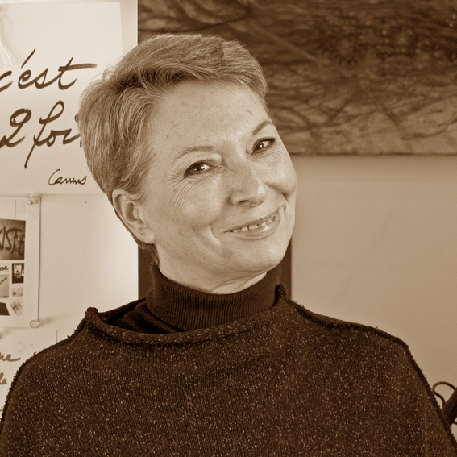

1950
Naissance à Bruxelles.
Etudes d'Arts plastiques à l'Académie de Molenbeek et à l'Académie Royale des Beaux-Arts de Bruxelles.
1967-1972
Etudes et diplôme d'Architecte à l'Académie Royale des Beaux-Arts de Bruxelles.
1972-1978
Projets et réalisation d'habitats et villages de la " Révolution agraire " en Algérie (Coopération technique).
1978-1980
Stage d'architecte au service d'Architecture de la Ville de Bruxelles.
1980-2005
Enseigne l'architecture et les moyens d'expression (dessin, couleurs, perspective...) à l'Académie des Beaux-Arts de Bruxelles et à l'Institut Supérieur d'Architecture Victor Horta.
Depuis 2005
Se consacre à la peinture à plein temps.
2014
Expose son travail au " Doyenné " (Maison des Arts d'Uccle à Bruxelles).